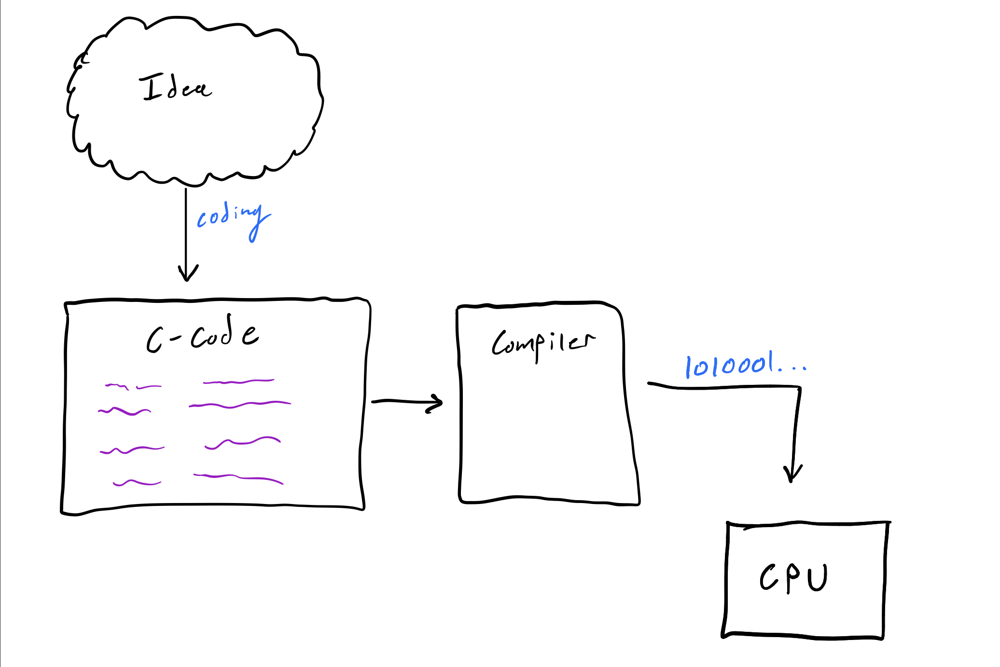

Introduction
If you are a blossoming computer scientist, it is likely you have heard about the language Python. With the knowledge of a single language, you think realize that there must be many different languages to talk to a computer with. What may come as something interesting is that there are distinct groups of languages we call programming paradigms. There are distinct programming paradigms, but many are too difficult to understand this early in your coding career, so we will only focus on Imperative Programming.
Imperative Programming
Imperative programming is what many refer to as normal programming. You think in variables like in math. A simple example is when you want to compute the speed of something. You are an advanced enough mammal that you can create a formula (a series of symbols) for this idea:
speed = distance / time
Now when you want to compute the speed, you simply assign values to the variables
distance and time that you specify in the formula. These are parameters:
compute_speed(distance, time):
speed = distance / time
return speed
Finally, you just assign values:
compute_speed(10, 1)
Which outputs 10. This is imperative. Variables are assigned, functions return values,
and things work in this linear fashion. All is good. If you care to know what else exists
feel free to read up on declaritive languages, but
it's optional. Now let's talk about the division in imperative languages
Two exist:
- Compiled Languages
- Interpreted Languages
Compiled Languages
It's likely you've also heard of the language C.
You must be wondering, how is C any different from Python? Why is Python more popular now? Which should
I use? These are all valid questions. Let's start by showing you what C is, then compare it to Python later.
C is a compiled language. This means the process of compilation must be done on the language after you write
it. According to ComputerHope:
Compilation is the process the computer takes to convert a high-level programming language into a machine language that the computer can understand. The software which performs this conversion is called a compiler.
In many ways, this makes sense. You can't just say English things to the computer. It needs to be translated
into something the computer understands, i.e., 100101011110101...—binary. You may think this is stupid,
since you already need to convert your high-level ideas into a specific language, then that language gets
translated again. The only reason this current way is more efficient is that it's easier to write
C than it is to write binary.
This means that our code can only work (run) on a computer after it has been compiled into a program. Assuming we can convert our high-level idea into C-code, our workflow now looks like this:

C Code -> <compiler> -> Binary Code
DIY C
Let's quickly do a simple example, though you are not sure how to code yet. Take the written code below and write it into a file with vim:
vim example.c
write:
#include <stdio.h>
int main()
{
printf("Hello World, from C!\n");
}
What is the type of the file we just created? Let's take a look with the file command:
(don't mind the ▶ shown, that is my custom shell symbol).
▶ file example.c
example.c: C source, ASCII text
It's an ASCII text file that the OS identified as a C source file.
If you are not familiar with ASCII, it's a way to encode numbers as letters and vice versa.
For example 65 translate to A and the other way around as well. For now, know that this is just a file
full of readable text.
Now lets compile it! gcc is the GNU (another name for Linux) C Compiler. Let's use it:
gcc example.c -o example
We used gcc and told it to name the output as example. You should now see it in the same directory:
▶ ls
example example.c
Now what is the type of example? Let's check:
▶ file example
example: ELF 64-bit LSB shared object, x86-64, version 1 (SYSV), dynamically linked, interpreter /lib64/ld-linux-x86-64.so.2, for GNU/Linux 3.2.0, BuildID[sha1]=aeac59bbc04b9845665af0406044181d241f31f6, not stripped
Wo. That is a lot of information. For now, let's talk about the first segment of text:
example: ELF 64-bit LSB shared object. This means example is a 64-bit ELF. What is an ELF?
Not a magical creature, but an executable program! Anything that is an ELF is a compiled
program that is ready and in computer language. Let's run it!
▶ ./example
Hello World, from C!
Amazing, it executed as expected.
What else is an ELF? Almost everything we use in the shell. Take for example ls:
▶ file /bin/ls
/bin/ls: ELF 64-bit LSB shared object, x86-64, version 1 (SYSV), dynamically linked, interpreter /lib64/ld-linux-x86-64.so.2, for GNU/Linux 3.2.0, BuildID[sha1]=9567f9a28e66f4d7ec4baf31cfbf68d0410f0ae6, stripped
Yup it's an ELF. We will go deeper into ELF's in the computer organization section. For now, know it's a compiled program. There are many compiled langauges out there. C and C++ are currently the most used. Here are some of the most popular:
Interpreted Languages
Unlike C, Python is not compiled (or at least not on the surface). Python is interpreted line-by-line.
This is really nice when you are working fast, because when you compile if there is one mistake in your
code, the entire program will not compile—which means you now have nothing but a C file. In Python,
if the code never executes to that section of the code, then it does not care. In addition, you can
execute entire lines of code independently. This is what makes an interpreted language different from
a compiled one.
With interpreted languages, the language is fed into an interpreter, which then executes the code. So similarly to compiled languages, we have a middle man that does some kind of translation; except now it's on a line-by-line basis. Let's look at it closer, on the DIY scale.
DIY Python
Like last time put this in a file:
vim example.py
#!/usr/bin/env python3
print("Hello World, from Python!")
As you can probably tell already, Python is much more concise. This is usually true when comparing an interpreted language to a compiled one. Now let's see what the type of this file is:
▶ file example.py
example.py: Python script, ASCII text executable
Yup, like last time it's an ASCII file identified as Python code. Now to make this executable we need to give it the executable permission:
chmod +x example.py
Then we can finally execute it like we did with the earlier example:
▶ ./example.py
Hello World, from Python!
Now, you must be wondering, how the hell did we just run a file full of readable text? Based on what we just learned, that should be impossible. It should have to go through some sort of middle-man that converts the code into a machine language. Well some magic happened that we did not see:
#!/usr/bin/env python3
That first line we wrote told the shell to execute this file using the python3 command.
This is equivalent to running the program like this:
▶ python3 example.py
Hello World, from Python!
And what the hell is python3? I think you know...
Note: python3 is a symbolic link for python3.6
▶ file /usr/bin/python3.6
/usr/bin/python3.6: ELF 64-bit LSB executable, x86-64, version 1 (SYSV), dynamically linked, interpreter /lib64/ld-linux-x86-64.so.2, for GNU/Linux 3.2.0, BuildID[sha1]=fc614aa299a924960da33b875fb9cfaa641ea5bc, stripped
Yup, it's an ELF. This means that the interpreter is indeed a compiled program written in
a compiled language (C++ in this case). Things make sense again. Since we know the
interpreter is magical; let's take this one step further. We can actually execute
the interpreter without any initial code:
▶ python3
Python 3.6.9 (default, Oct 8 2020, 12:12:24)
[GCC 8.4.0] on linux
Type "help", "copyright", "credits" or "license" for more information.
>>>
Executing python3 alone should put you in some kind of prompt now. It's ready
to execute things line by line. Try it:
>>> print("hello world")
hello world
>>> print("wow so cool")
wow so cool
>>> print(4 + 5)
9
Pretty cool right? It executes things line by line and can even use variables you define. As you can see, all interpreted languages are built on compiled languages. At the end of the day, the computer only understands machine language—remember this.
Here are some popular interpreted languages:
Yes, the shell you have been using is indeed an interpreted language.
Speed Comparison
The last thing to mention is that because of the nature of executing a program line-by-line, compiled languages are often much faster than interpreted languages. For instance, let's compare two programs that do the exact same thing in two languages.
You know the deal:
vim test.c
#include <stdio.h>
int main()
{
int temp = 0;
for(int i = 0; i < 1000000000; i++);
temp += 1;
return temp;
}
gcc test.c -o test
Now let's write the python version:
vim test.py
#!/usr/bin/env python3
def main():
temp = 0
for i in range(1000000000):
temp += 1
return temp
main()
chmod +x test.py
Now we have two versions, test.py and test -- a compiled vs interpreted race.
Both of these programs run the action "increment temp" 1 billion times.
For the C program, this is nothing, but for python... well. Let's time it:
▶ time ./test
./test 2.28s user 0.00s system 99% cpu 2.285 total
The C program took 2.28 seconds. Let's time the Python one (wait for it!):
▶ time ./test.py
./test.py 37.60s user 0.01s system 99% cpu 37.620 total
The python program took 37.60 seconds. Wow. Your times may be slightly different,
but the difference being large will be the same. In this case, C was 16 times
faster. You can see how this gets bad on a larger scale, but I digress.
Let's move on to using these languages.